Assisi
June 27, 2023

On June 27, 2023 we day-tripped to Assisi during our Italy trip.
We walked the streets up to the Basilica of San Francesco, stepped through the cloister, and took in the views over the valley.


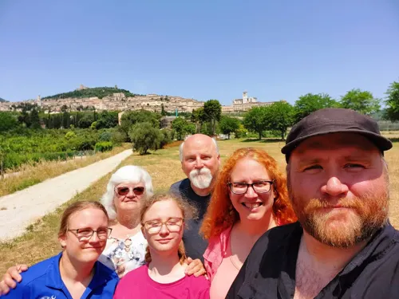

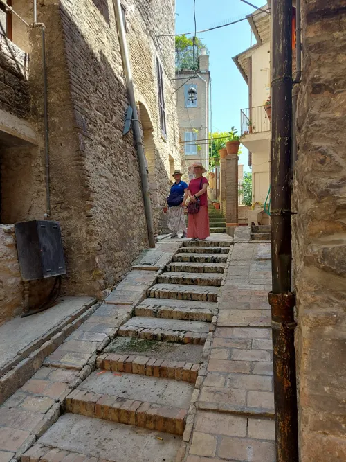

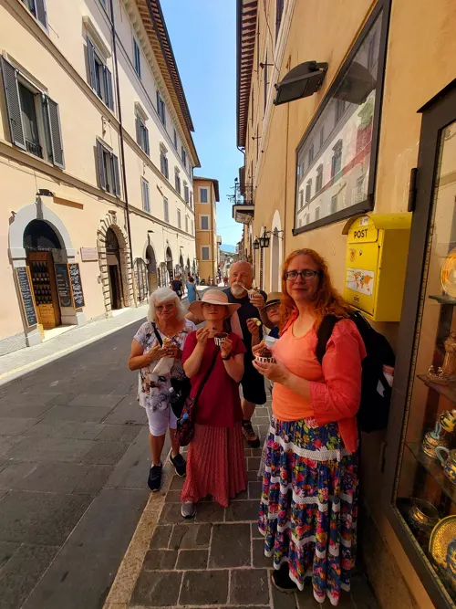

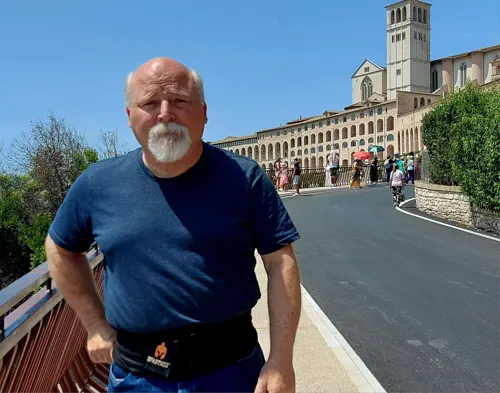

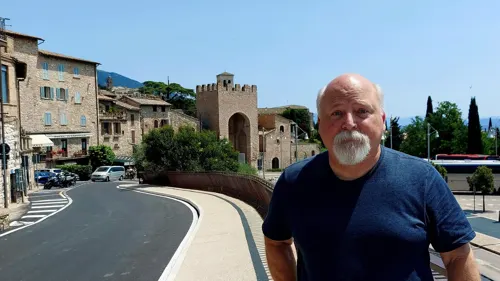

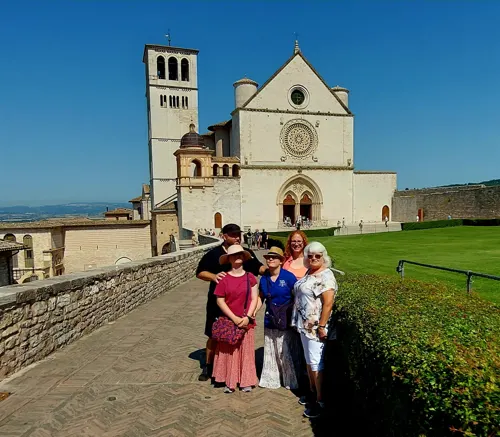

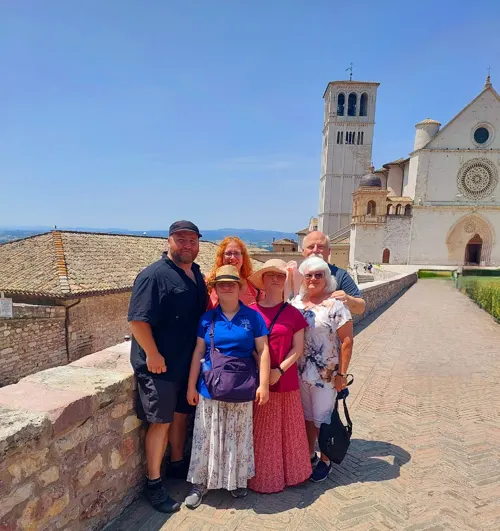

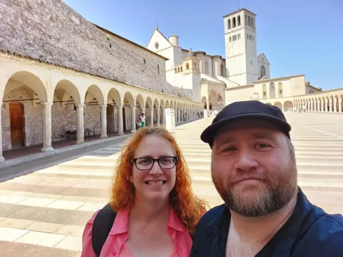

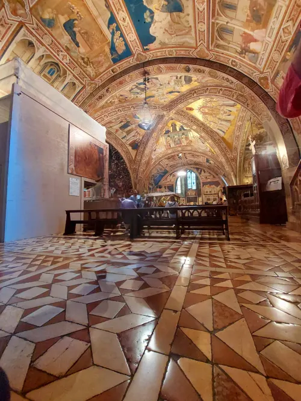

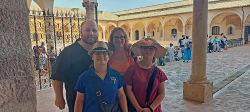

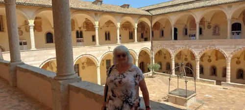

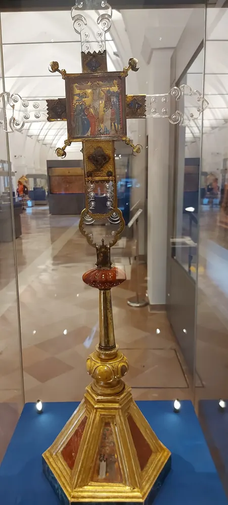